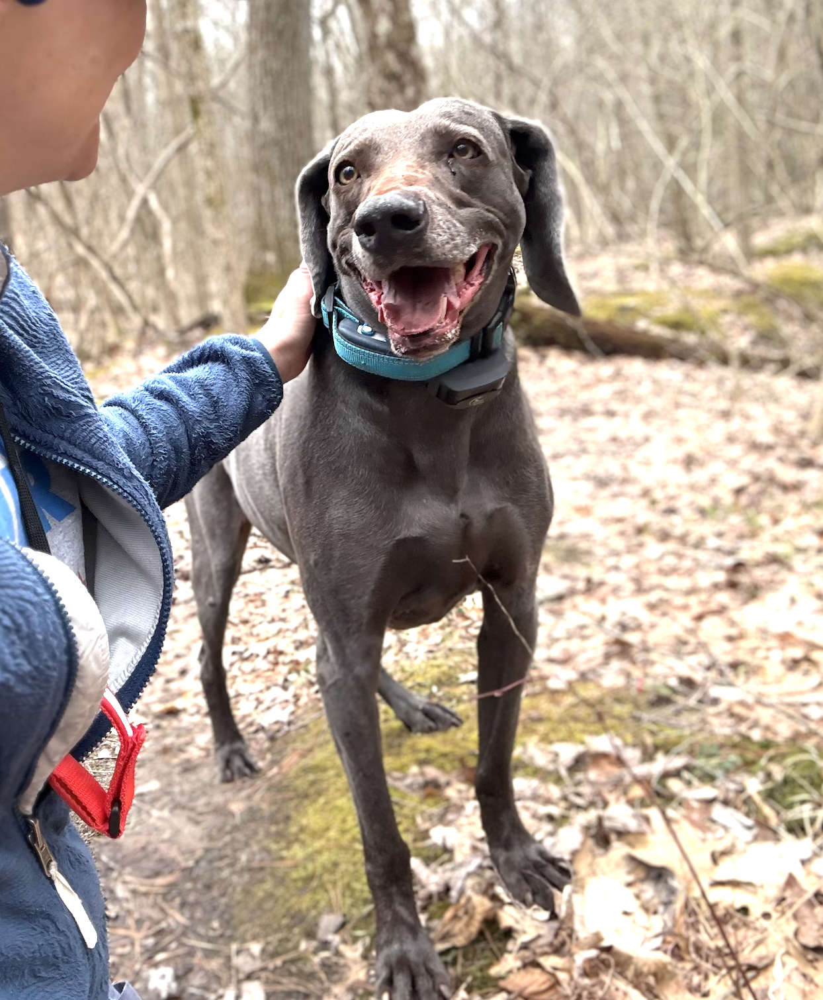

A living care archive
Luke VonDog.
Everything his people need, in one place.

The one thing
Never stop his furosemide.
For his vet, his nutritionist, and whoever's watching him.
Blue Weimaraner · neutered male · 12 yr · 35.9 kg / 79.1 lb · microchip …858399 · no known drug reactions · currently in Bozeman, MT through Sept 2026.
Read first
Safety & goals of care
Do NOT stop the furosemide (Lasix), 300 mg/day.
→ Breathing hard, open-mouthed, or asleep breaths > 30/min: treat as CHF decompensation.
Before you manage him
Cardiac ↔ renal — both meds nephrotoxic
Cardiac dx presumptive (no echo/biomarkers)
Labs ~10 mo old — recheck first
GDV risk · no 2nd NSAID or steroid
Who Luke is: friendly · a brilliant, athletic beast · a lover of food and learning.
A peaceful, dignified death. DNR · no CPR · no hospitalization · comfort over resuscitation.
Rikki's directive — please honor it. Keep him well and comfortable; when it's time, let him go peacefully.
Creatinine HIGH
1.8
↑ 1.0→1.2→1.8 · Sep '25
Phosphorus HIGH
5.1
Sep '25 · target < 4.6
ALT HIGH
128
↑ rising · Sep '25
Labs are Sep '25 – Mar '26 — a snapshot, not today's status. Full detail in Luke at a Glance.
Start here
Who's it for
Veterinarian
What a vet wants to know
- Never stop furosemide.
- DNR · comfort over rescue.
- Cardiac ↔ renal; labs ~10 mo old.
Nutritionist
What the nutritionist wants to know
- No shelf diet fits (heart vs kidney).
- ~94% short on omega-3.
- Confirm the picture first.
Pet sitter
What a pet sitter wants to know
- Pills in goat cheese — never skip furosemide.
- Food, carrots, his Woojer mat.
- The signs that mean call now.
Currently in Bozeman
Through September 2026 · ~4,820 ft altitude + wildfire-smoke season. Local ER: Foothills · (406) 556-0604.
Everything
All documents
1Luke at a GlanceThe 2-page clinical brief.
2Data Visualization10 years of bloodwork, charted.
3System MapConditions in conflict.
4Diet & Meds MatrixFood + drugs, mapped to his systems.
5Verbatim TimelineThe complete record — source of truth.
6What Could HelpOwner's ideas — for discussion.
7Nutrition ConsultA brief for a nutritionist.
8Helping Luke ThriveModern options, filtered for his body.
9Bozeman Local-CareAt-altitude reference.
10Pet-Sitter GuidePlain-language care for Luke.
Reach
Contacts
Owner
Local ER — Bozeman
Foothills Veterinary
(406) 556-0604 · fvhmt.com
(406) 556-0604 · fvhmt.com
Home clinic & records
Thornwood · Ada, MI
(616) 676-1251
(616) 676-1251
Luke VonDog · owner-compiled care archive · as of July 2026 · not a veterinary record or a directive.